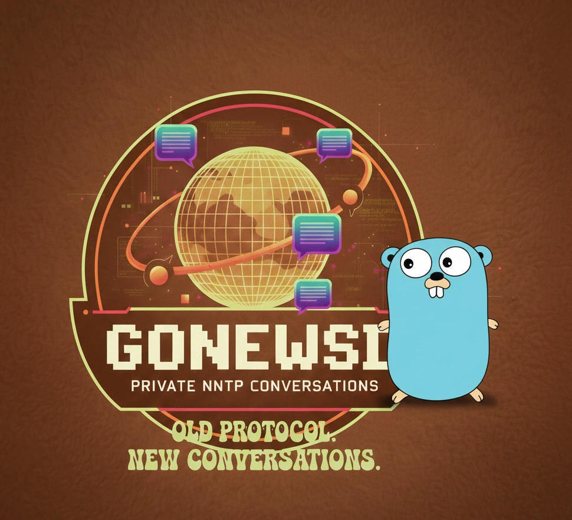

A simple, standalone NNTP news server written in Go

gonewsd is a lightweight, standalone NNTP (Network News Transfer Protocol) server for hosting private newsgroups. It's a Go port of the original newsd by Greg Ercolano.
Unlike traditional Usenet servers, gonewsd is designed for private use -- serving one or more newsgroups on your local network or via the internet. Perfect for team discussions, project coordination, or hobbyist communities.
Think of it as Reddit before the Web even existed. Usenet is one of the oldest computer network communication systems -- created in 1979, over a decade before the World Wide Web (1991). It consists of newsgroups -- discussion forums organized by topic -- where users post and read messages using NNTP clients (news readers).
At its peak in the late 1990s and early 2000s, Usenet hosted over 100,000 newsgroups with millions of active users worldwide. It was the primary forum for technical discussions, academic collaboration, and online communities before web-based forums took over.
While public Usenet has declined with the rise of web forums, social media, and platforms like Reddit, the underlying technology remains remarkably robust and useful:
gonewsd provides built-in user authentication (SQLite backend) with flexible per-group access controls.
Post messages via email using the built-in mail-to-news gateway.
Written in Go and statically compiled-runs as a single binary, no external dependencies.
Includes systemd service template for easy deployment on Linux.
Builds for Linux and macOS (amd64 and arm64).
📥 Option A: Download pre-built binaries from the Releases page. Extract the zip file for your platform (Linux or macOS).
🔧 Option B: Build from source:
git clone https://github.com/runableapp/gonewsd.git
cd gonewsd
task build# Copy and edit config file
cp gonewsd.conf /etc/gonewsd.conf
# Create a newsgroup
./bin/gonewsd -c /etc/gonewsd.conf addgroup -group my.discussion -g rw -o r -desc "My discussion group"
# Start the server
./bin/gonewsd -c /etc/gonewsd.confUse your favorite NNTP client (Thunderbird, tin, slrn, etc.) to connect to your server.
For detailed installation instructions, see the Installation Guide.
Full documentation is available in the manuals/ directory:
Run gonewsd help for built-in command reference.
If gonewsd is useful for you, your support helps keep development going.
Support This Open Source Project